Архитектуры DL
Вопросы по архитектурам моделей глубокого обучения: от нестареющей классики до современных моделей.
-
Autoencoder (2006)
Автоэнкодер (Autoencoder, AE) — нейронная сеть, которую обучают сжимать вход в низкоразмерное скрытое представление, а затем восстанавливать из него исходные данные. Систематически применять автоэнкодеры для инициализации глубоких сетей предложили Хинтон и Салахутдинов в 2006 году.
Если совсем простыми словами: это сеть, которую учат пересказывать саму себя своими словами. Ей дают картинку, заставляют ужать её до короткого «конспекта» из нескольких десятков чисел, а потом по этому конспекту восстановить картинку обратно. Чтобы восстановление получалось, конспект обязан содержать самое важное — этому сеть и учится.
- Энкодер $f_\phi$ — отображает вход $\mathbf{x}$ в скрытый вектор $\mathbf{z} = f_\phi(\mathbf{x})$ меньшей размерности. Место, где размерность минимальна, называют бутылочным горлышком (bottleneck).
- Декодер $g_\theta$ — восстанавливает вход из скрытого вектора: $\hat{\mathbf{x}} = g_\theta(\mathbf{z})$.
Обе половины — обычные нейросети, обучаются вместе, одним обратным распространением.
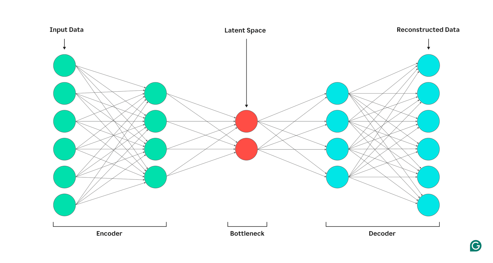
Вход сужается энкодером до узкого «горлышка» $\mathbf{z}$, затем декодер расширяет его обратно до исходной размерности. Ошибка считается между входом и выходом — разметка не нужна. Модель минимизирует ошибку восстановления (reconstruction loss) — расхождение между входом и тем, что получилось на выходе:
$$\mathcal{L} = \|\mathbf{x} - g_\theta(f_\phi(\mathbf{x}))\|^2$$
То есть: прогнали объект через сеть, сравнили результат с оригиналом, разницу возвели в квадрат и просуммировали. Для бинарных данных (чёрно-белые пиксели, признаки 0/1) вместо MSE берут бинарную кросс-энтропию.
Обратите внимание: в формуле нет $y$. Целью выступает сам вход, поэтому автоэнкодер — метод обучения без учителя: размеченные данные ему не нужны.
Возьмём MNIST — рукописные цифры $28 \times 28$ пикселей, то есть $784$ числа на объект.
- Энкодер: $784 \to 256 \to 64 \to 32$. На выходе — вектор $\mathbf{z}$ из 32 чисел.
- Декодер: $32 \to 64 \to 256 \to 784$. На выходе — снова картинка.
Сжатие в $784/32 \approx 24$ раза. Чтобы восстановить цифру по 32 числам, сеть вынуждена запомнить не пиксели, а что нарисовано: наклон, толщину линии, есть ли петля, замкнут ли контур. Эти 32 числа и есть выученные признаки.
Ключевая идея: бутылочное горлышко — это дефицит места.
Если бы $\mathbf{z}$ был такой же размерности, что и вход, сеть могла бы просто скопировать вход на выход — выучить тождественное отображение $g_\theta(f_\phi(\mathbf{x})) = \mathbf{x}$ — и ошибка была бы нулевой при нулевой пользе.
Когда места мало, скопировать всё нельзя, приходится выбирать, что сохранить. Сеть сохраняет то, что чаще всего помогает восстановить объект, — то есть регулярности данных, а не случайный шум конкретного примера. Автоэнкодер с $d_z < d_x$ называют неполным (undercomplete).
Скрытое (латентное) пространство — пространство всех возможных значений вектора $\mathbf{z}$. Каждый объект превращается в точку в этом пространстве.
Полезное свойство: близкие точки соответствуют семантически похожим входам. Две единицы с похожим наклоном окажутся рядом; единица и восьмёрка — далеко. Именно поэтому $\mathbf{z}$ можно использовать как эмбеддинг (числовое представление объекта) для поиска похожих, кластеризации или как вход в другую модель.
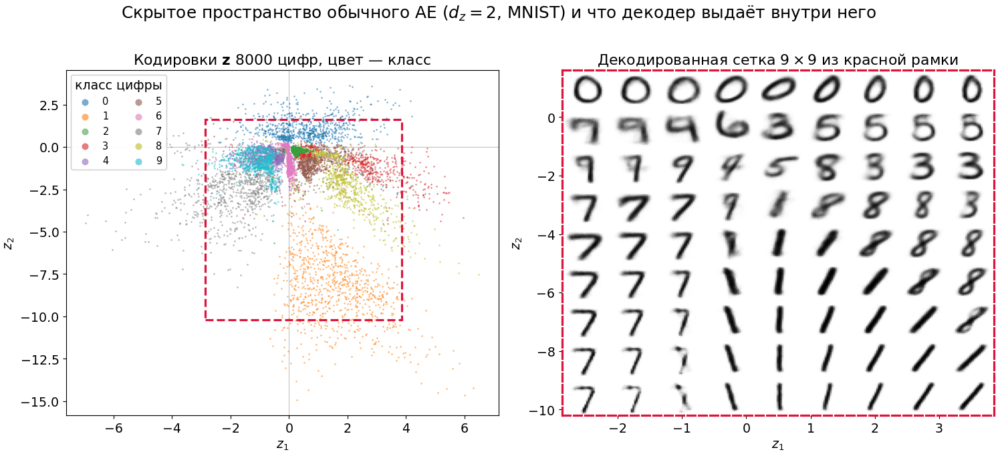
Слева — кодировки 8000 цифр MNIST автоэнкодером с $d_z = 2$, цвет обозначает класс: точки одного класса собираются в связные области, а «единицы» (оранжевые) вытянуты хвостом далеко вниз, до $z_2 \approx -15$. Справа — что декодер выдаёт в узлах равномерной сетки $9 \times 9$ внутри красной рамки, отмеченной и на левой панели. В плотных зонах получаются нормальные цифры, а на стыках между кластерами — размытые гибриды вроде восьмёрки, переходящей в единицу: там декодер почти не обучался. PCA тоже сжимает данные в меньшую размерность, но умеет только линейные преобразования — по сути поворот и проекцию.
Автоэнкодер с нелинейными активациями может «загибать» пространство: развернуть спираль, разделить вложенные сферы, выпрямить кривую поверхность. Поэтому его называют нелинейным обобщением PCA. Более того, линейный автоэнкодер с MSE-потерей выучивает ровно то же подпространство, что и PCA, — это удобная проверка интуиции.
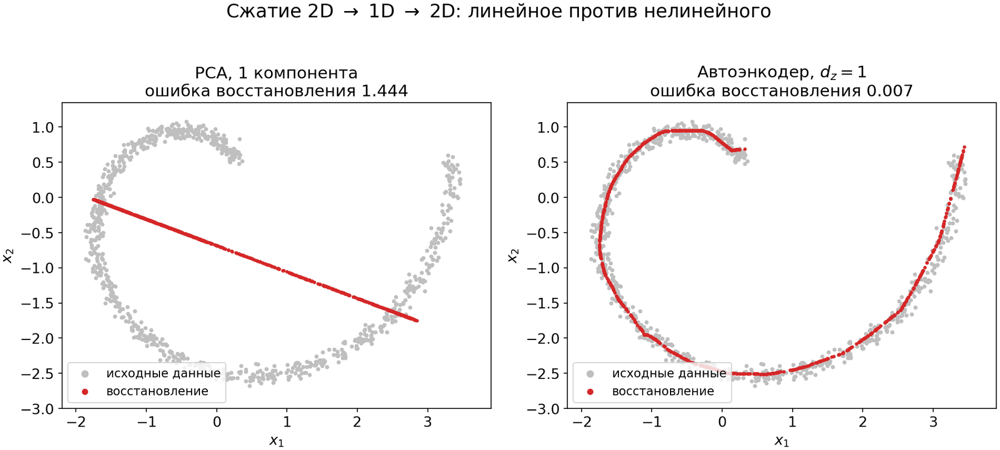
Одни и те же 900 точек, лежащих вдоль изогнутой дуги (серые), сжаты до одного числа и восстановлены обратно. Слева PCA с одной компонентой: восстановленные точки (красные) обязаны лечь на прямую, ошибка 1.444. Справа автоэнкодер с $d_z = 1$ и нелинейными активациями: восстановление повторяет саму дугу, ошибка 0.007 — в двести раз меньше при том же одном числе в горлышке. Видно и ограничение: у верхнего края, где концы дуги сближаются, кривая AE слегка срезает угол. Завод снимает 60 показателей с насоса раз в минуту. Поломок мало, размечать их дорого — но нормальных данных сколько угодно.
- Обучаем автоэнкодер только на нормальных периодах работы, $60 \to 8 \to 60$.
- В проде считаем ошибку восстановления для каждой новой минуты.
- Нормальный режим сеть восстанавливает с ошибкой ~0.02; когда подшипник начинает греться, комбинация показателей становится непохожей на всё виденное, и ошибка прыгает до 0.5.
Порог по ошибке (например, 99-й перцентиль ошибки на обучении) и служит детектором. Разметка аномалий при этом не потребовалась ни разу.
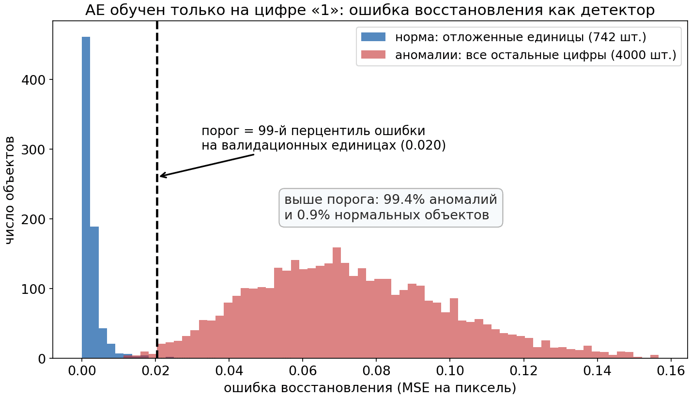
Тот же приём, разыгранный на MNIST: автоэнкодер с $d_z = 8$ обучен только на цифре «1» — она играет роль нормального режима. Синяя гистограмма — ошибка восстановления на отложенных единицах, красная — на 4000 объектов всех остальных классов; шкала общая, и распределения почти не перекрываются. Чёрный пунктир — порог, взятый как 99-й перцентиль ошибки на отдельной валидационной выборке единиц: выше него оказываются 99.4% аномалий и лишь 0.9% нормальных объектов. - Снижение размерности — нелинейная альтернатива PCA для визуализации и сжатия.
- Предобучение — исторически главный сценарий 2006 года: обучить AE на большом объёме неразмеченных данных, взять энкодер и дообучить его на маленькой размеченной выборке под классификацию.
- Удаление шума и заполнение пропусков — в специализированных вариантах (denoising autoencoder).
- Генерация — обычному AE она даётся плохо, для этого придуман VAE.
- «Автоэнкодер — генеративная модель». Нет. Если взять случайный $\mathbf{z}$ и подать в декодер обычного AE, скорее всего получится мусор: в скрытом пространстве полно «дыр» — областей, куда не попал ни один обучающий объект, и что декодер выдаст там, никто не контролировал.
- «Чем меньше ошибка восстановления, тем лучше признаки». Не обязательно. Слишком мощный энкодер при слишком широком горлышке научится хитро копировать вход — ошибка будет крошечной, а признаки бесполезными.
- Забыть про масштаб признаков. MSE суммирует ошибки по всем координатам, поэтому признак с диапазоном $[0, 100000]$ полностью заглушит признак с диапазоном $[0,1]$. Табличные данные перед AE обязательно нормируют.
- Оценивать детектор аномалий по обучающей ошибке. На обучающих объектах ошибка восстановления систематически ниже, чем на новых нормальных, поэтому порог, взятый по обучающей выборке, окажется заниженным — и детектор станет срабатывать на обычном нормальном трафике. Порог подбирают на отложенной выборке нормальных данных.
Что такое автоэнкодер и зачем он нужен?
Нейросеть из энкодера и декодера, обучаемая восстанавливать собственный вход через узкое скрытое представление. Нужна для сжатия данных, снижения размерности, извлечения признаков без разметки, поиска аномалий и предобучения глубоких сетей.
Почему автоэнкодер относят к обучению без учителя?
Потому что целевым значением служит сам вход: функция потерь сравнивает $\mathbf{x}$ и $g_\theta(f_\phi(\mathbf{x}))$, никаких меток $y$ не требуется. Достаточно неразмеченных данных, которых обычно много.
Зачем нужно «бутылочное горлышко»?
Оно ограничивает объём информации, который можно пронести от входа к выходу. Без ограничения сеть выучит тождественное отображение и ничему не научится; при дефиците места она вынуждена сохранять только устойчивые закономерности данных.
Чем автоэнкодер отличается от PCA?
PCA ищет линейное подпространство, автоэнкодер с нелинейными активациями может выучить произвольное нелинейное многообразие. Линейный AE с MSE сходится к тому же подпространству, что и PCA, — то есть PCA является его частным случаем.
Как автоэнкодер применяют для детекции аномалий?
Обучают только на нормальных данных, затем в проде считают ошибку восстановления. Нормальные объекты восстанавливаются хорошо, аномальные — плохо, потому что сеть не видела таких структур. Порог по ошибке (обычно высокий перцентиль ошибки на валидации) и служит решающим правилом.
Почему обычный автоэнкодер плохо генерирует новые объекты?
Потому что его скрытое пространство ничем не регуляризовано: обучающие кодировки образуют кластеры с пустотами между ними, и декодер никогда не учился что-либо осмысленное выдавать в этих пустотах. Проблему решает VAE, добавляя KL-штраф, прижимающий кодировки к стандартному нормальному распределению.
Что такое ёмкость автоэнкодера и как она связана с качеством признаков?
Ёмкость — выразительная способность энкодера и декодера (число слоёв и нейронов). Её наращивают отдельно от размерности $d_z$: слишком большая ёмкость при широком горлышке позволяет сети «схитрить» и закодировать вход почти без потерь, не выучив полезной структуры.
-
Denoising Autoencoder (2008)
Шумоподавляющий автоэнкодер (Denoising Autoencoder, DAE) — автоэнкодер, обученный восстанавливать чистый вход $\mathbf{x}$ из его намеренно испорченной версии $\tilde{\mathbf{x}}$. Предложен Венсаном и соавторами (Vincent et al.) в 2008 году.
Если совсем простыми словами: мы портим данные сами и требуем от сети починить их обратно. Замазали половину фотографии — восстанови. Обычный автоэнкодер получает на вход то же, что должен выдать; шумоподавляющий получает испорченное, а сравнивают его выход с оригиналом.
- Взять чистый пример $\mathbf{x}$ из обучающей выборки.
- Испортить его случайным образом: $\tilde{\mathbf{x}} = \text{corrupt}(\mathbf{x})$.
- Прогнать испорченную версию через сеть и сравнить результат с чистым оригиналом:
$$\mathcal{L} = \|\mathbf{x} - g_\theta(f_\phi(\tilde{\mathbf{x}}))\|^2$$
Шум генерируется заново на каждой эпохе, поэтому сеть ни разу не видит одну и ту же испорченную версию дважды.
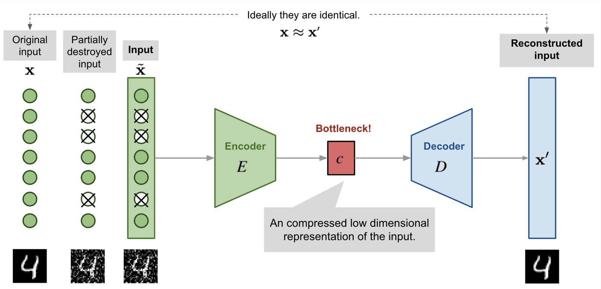
На вход энкодера подаётся зашумлённый объект $\tilde{\mathbf{x}}$, а функция потерь сравнивает выход декодера с исходным чистым $\mathbf{x}$ — именно этот «разрыв» между входом и целью и заставляет сеть выучивать структуру данных, а не копировать вход. - Гауссовский шум: $\tilde{\mathbf{x}} = \mathbf{x} + \epsilon$, где $\epsilon \sim \mathcal{N}(0, \sigma^2 I)$ — каждому пикселю или признаку добавляется небольшое случайное смещение.
- Маскирующий шум (masking noise): случайные элементы обнуляются с вероятностью $p$ — по сути dropout, применённый ко входу.
- «Соль и перец»: случайные элементы заменяются на минимальное или максимальное значение (чёрные и белые точки на изображении).
Маскирующий шум — самый распространённый: при $p = 0.5$ половина признаков скрыта, и сеть учится угадывать их по оставшимся. Это ровно та же идея, что в masked language modeling у BERT.
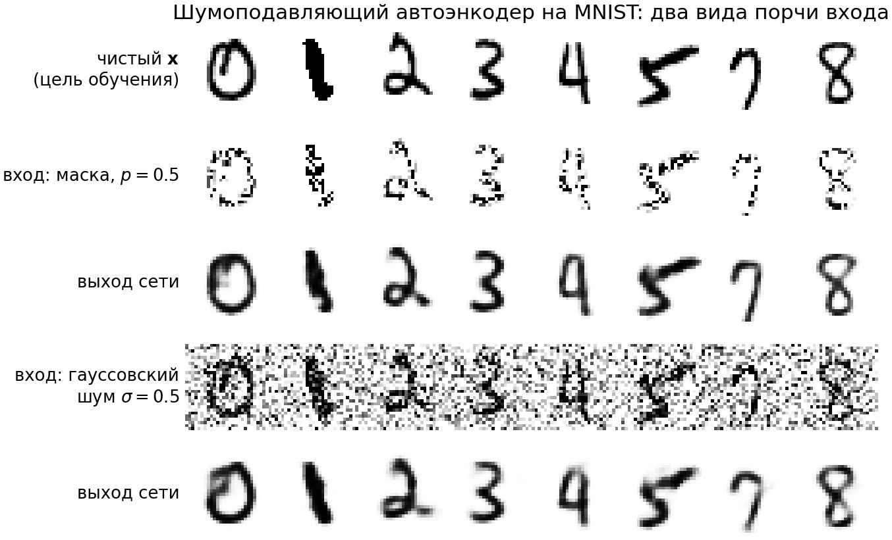
Верхний ряд — чистые цифры, они же цель обучения. Второй ряд — вход с маскирующим шумом $p = 0.5$: половина пикселей обнулена, штрихи рассыпаются на точки. Третий ряд — выход сети, обученной на такой порче. Четвёртый и пятый ряды — то же самое для гауссовского шума $\sigma = 0.5$, где на вход подмешан фон из случайных пикселей; для него обучена отдельная сеть. В обоих случаях выход мягче и толще оригинала: сеть восстанавливает не конкретные пиксели, а правдоподобную цифру целиком. У обычного автоэнкодера есть постоянный соблазн: если места в горлышке хватает, выучить хитрое копирование входа и получить нулевую ошибку, ничего не поняв про данные.
Шумоподавляющий автоэнкодер лишает его этой возможности. Скопировать вход теперь нельзя — вход испорчен, а сравнивают с оригиналом. Чтобы угадать, что было под маской, сеть обязана знать, как признаки связаны между собой: что на месте затёртого пикселя, скорее всего, продолжение штриха; что если возраст 19, то стаж работы не 30 лет.
Иначе говоря, зашумление — это регуляризация, которая переводит задачу из «сожми и разожми» в «пойми, как устроены данные».
Клиентские анкеты: возраст, город, стаж, доход, число кредитов — 5 признаков.
При обучении с $p = 0.2$ у каждой анкеты случайно обнуляется примерно один признак. Взяли строку
(34, Москва, 9 лет, ???, 1)— сеть должна восстановить доход.Чтобы попадать в цель, ей приходится выучить реальную зависимость: в Москве при стаже 9 лет доход обычно выше, чем в маленьком городе при том же стаже. Именно эта зависимость и есть полезное представление — как побочный эффект получается модель, которая умеет заполнять пропуски в реальных анкетах.
Сила порчи $\sigma$ или $p$ регулирует силу регуляризации:
- Шума слишком мало ($p = 0.02$) — задача почти не отличается от обычного AE, эффекта нет.
- Шума слишком много ($p = 0.9$) — восстановить нечего, сеть выучивает «среднюю картинку» по датасету и выдаёт размытое нечто на любой вход.
- Практический диапазон для маскирующего шума — $p \in [0.1, 0.5]$; подбирают по качеству на нижестоящей задаче, а не по ошибке восстановления.
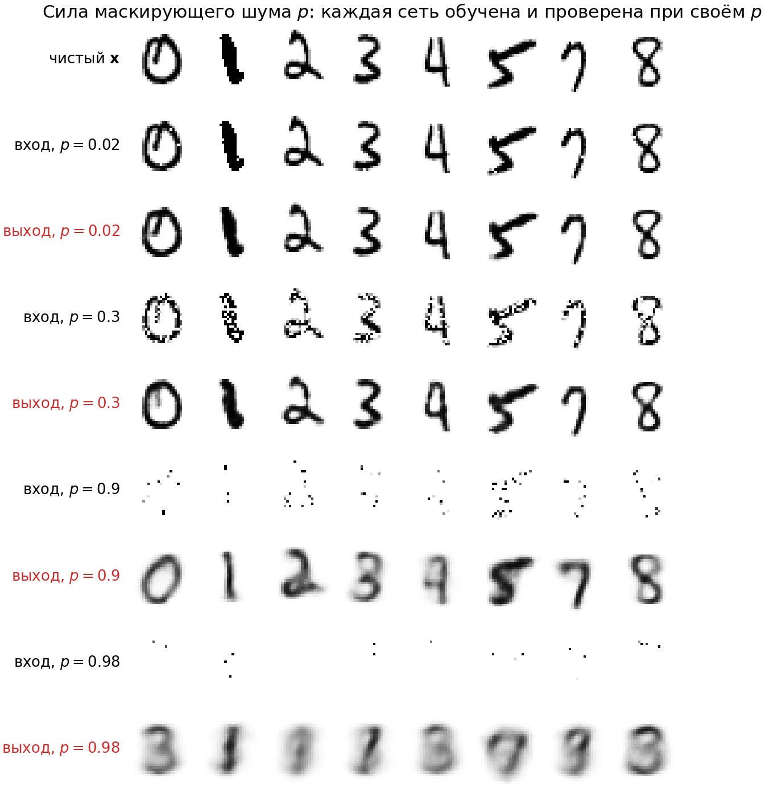
Четыре независимо обученные сети, каждая проверена при том же $p$, при котором обучалась: чёрным подписаны входы, красным — соответствующие выходы. При $p = 0.02$ задача почти не отличается от обычного автоэнкодера. При $p = 0.3$ и даже при $p = 0.9$ сеть ещё вытягивает исходную цифру, теряя чёткость штриха. А при $p = 0.98$ от входа остаётся два-три пикселя, и выходы схлопываются в две-три размытые усреднённые закорючки, повторяющиеся по всему ряду и почти не зависящие от того, что было подано, — это и есть режим «шума слишком много». Где именно проходит граница, зависит от данных: на MNIST перелом случается между $p = 0.9$ и $p = 0.98$. Есть красивая теоретическая интерпретация: DAE неявно оценивает score function — градиент логарифма плотности данных $\nabla_{\mathbf{x}} \log p(\mathbf{x})$.
Смысл: вектор поправки $g_\theta(f_\phi(\tilde{\mathbf{x}})) - \tilde{\mathbf{x}}$ показывает, в какую сторону сдвинуть зашумлённую точку, чтобы она стала более похожа на реальные данные. То есть сеть учит «стрелку, указывающую к многообразию данных».
Ровно этот механизм лежит в основе диффузионных моделей (2020, Stable Diffusion и родственники): там шум добавляют многократно и постепенно, а сеть многими маленькими шагами убирает его обратно, начиная с чистого шума. Denoising-автоэнкодер — одношаговый предок этого подхода.
- Очистка изображений — удаление зернистости, артефактов сжатия, шума на медицинских снимках.
- Заполнение пропусков — восстановление недостающих значений в табличных данных и пропущенных фрагментов изображений (inpainting).
- Предобучение — исторически stacked DAE (несколько последовательно обученных DAE) дал один из первых рабочих рецептов обучения глубоких сетей.
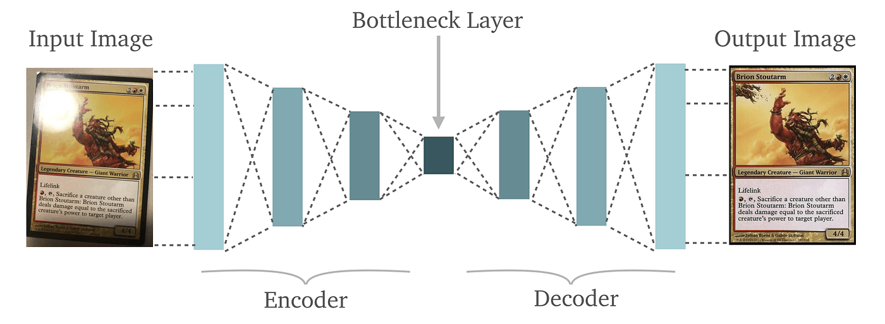
Та же идея на фотографии, а не на цифрах: слева вход — снимок карточки с бликом от вспышки, справа выход. Между ними всё тот же энкодер, узкое горлышко (bottleneck) и декодер. Порча здесь не искусственная, а настоящая, но принцип не меняется: сеть выучила, как выглядит нормальная карточка, и достраивает то, что должно быть под бликом. - Сравнивать выход с зашумлённым входом. Тогда сеть просто научится воспроизводить шум. Целью всегда должен быть чистый $\mathbf{x}$.
- Фиксировать шум один раз перед обучением. Испорченные версии нужно генерировать заново каждую эпоху, иначе сеть запомнит конкретные повреждения и эффект регуляризации пропадёт.
- Оставлять шум на инференсе. Шум — инструмент обучения. В проде на вход подаются реальные данные как есть (или уже реально зашумлённые, если задача — денойзинг).
- Считать, что DAE обязан быть узким. В отличие от обычного AE, шумоподавляющему бутылочное горлышко не обязательно: роль ограничения выполняет сам шум, поэтому $d_z$ может быть даже больше $d_x$.
Чем denoising autoencoder отличается от обычного автоэнкодера?
На вход подаётся намеренно испорченная версия объекта $\tilde{\mathbf{x}}$, а ошибка считается относительно чистого оригинала $\mathbf{x}$. У обычного AE вход и цель совпадают.
Почему зашумление входа улучшает выученные признаки?
Оно делает невозможным тривиальное копирование входа на выход. Чтобы восстановить утраченное, сеть вынуждена выучить зависимости между признаками и структуру распределения данных, а не запоминать отдельные примеры.
Какие виды шума применяются и какой из них основной?
Гауссовский (аддитивное случайное смещение), маскирующий (обнуление случайных элементов с вероятностью $p$) и «соль и перец» (замена на крайние значения). Чаще всего используют маскирующий — он же лежит в основе masked language modeling.
Как выбрать силу шума?
Это гиперпараметр: слишком слабый шум не даёт эффекта регуляризации, слишком сильный уничтожает информацию, и сеть начинает выдавать усреднённый объект. Типичный диапазон для маскирующего шума — $p$ от 0.1 до 0.5, подбирается по качеству на целевой задаче.
Нужно ли в DAE узкое бутылочное горлышко?
Не обязательно. Ограничением от тождественного отображения служит сам шум, поэтому скрытый слой может быть широким и даже избыточным ($d_z > d_x$) — сеть всё равно не сможет просто скопировать вход.
Какая связь у DAE с диффузионными моделями?
DAE неявно оценивает score function $\nabla_{\mathbf{x}} \log p(\mathbf{x})$: разность между выходом и зашумлённым входом указывает направление к многообразию реальных данных. Диффузионные модели используют тот же принцип, но итеративно — множеством мелких шагов расшумления из чистого шума.
Какие практические задачи решает DAE?
Очистка изображений и сигналов от шума, заполнение пропусков в табличных данных, inpainting изображений, а исторически — послойное предобучение глубоких сетей (stacked DAE).
-
Сужающий автоэнкодер
Сужающий (неполный) автоэнкодер (Undercomplete Autoencoder) — автоэнкодер, у которого размерность скрытого пространства меньше размерности входа: $d_z < d_x$. Такое «бутылочное горлышко» вынуждает энкодер выучить сжатое представление и отбросить избыточность.
Если совсем простыми словами: это автоэнкодер, которому специально не дали места. Вход из 784 чисел нужно пересказать 32 числами — всё не влезет, поэтому сети приходится выбрать самое важное. Это классический, «канонический» автоэнкодер: когда говорят просто «автоэнкодер», обычно имеют в виду именно его.
Сеть сужается от входа к скрытому слою и симметрично расширяется обратно:
$$d_x \;\longrightarrow\; d_1 \;\longrightarrow\; \cdots \;\longrightarrow\; d_z \;\longrightarrow\; \cdots \;\longrightarrow\; d_x$$
где $d_x > d_1 > \cdots > d_z$. Отсюда и название «сужающий»: слои идут на сужение, самая узкая точка — $d_z$.
Симметрия декодера энкодеру — соглашение, а не требование: декодер может быть устроен иначе, важен только размер горлышка.
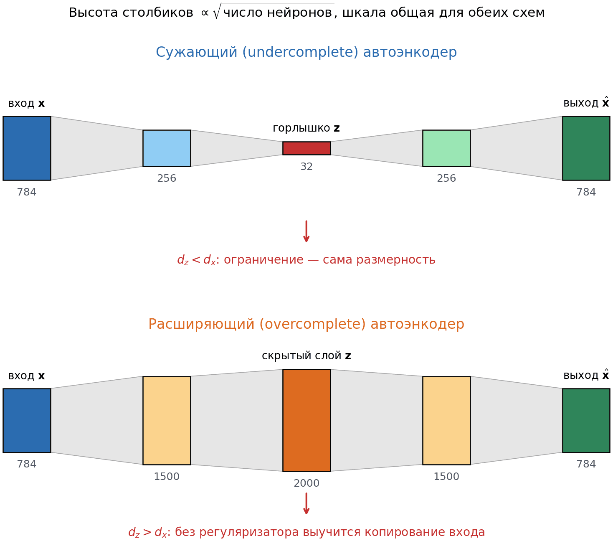
Сверху — сужающая схема: слои идут $784 \to 256 \to 32 \to 256 \to 784$, самая узкая точка и есть бутылочное горлышко, а ограничением служит сама размерность. Снизу для контраста расширяющая схема из следующего вопроса: скрытый слой шире входа ($2000 > 784$), места хватает на копирование, поэтому ограничивать представление приходится регуляризатором. Высота столбиков пропорциональна корню из числа нейронов и отложена в одном масштабе на обеих схемах — поэтому синие входные блоки одинаковой высоты. Автоэнкодер без ограничений имеет тривиальное решение: скопировать вход на выход. Ошибка ноль, пользы ноль.
Горлышко $d_z < d_x$ делает такое решение физически невозможным: через $d_z$ чисел нельзя пронести $d_x$ чисел без потерь. Возникает вопрос «чем пожертвовать», и сеть жертвует тем, что реже помогает восстановить объект, — случайными деталями конкретного примера. Остаются устойчивые закономерности, общие для всей выборки.
Это тот же принцип, что у сжатия с потерями в JPEG: ограничение объёма заставляет хранить структуру, а не шум.
Если у автоэнкодера линейные активации и MSE-потеря, оптимальное скрытое представление задаёт то же подпространство, что и первые $d_z$ главных компонент PCA.
То есть сужающий AE — прямое нелинейное обобщение метода главных компонент: PCA умеет только поворачивать и проецировать, а AE с нелинейностями может разогнуть спираль, разделить вложенные кольца, выпрямить изогнутую поверхность. Отсюда практическое правило: если данные близки к линейным, PCA даст почти то же самое дешевле и стабильнее.
Степень сжатия — отношение $d_z / d_x$. Чем оно меньше, тем жёстче ограничение и тем более выразительными должны быть энкодер и декодер, чтобы не потерять важное.
При слишком сильном сжатии ошибка восстановления растёт, а скрытое представление перестаёт различать детали: например, все семёрки схлопываются в одну «усреднённую семёрку». $d_z$ — гиперпараметр, который подбирают под задачу.
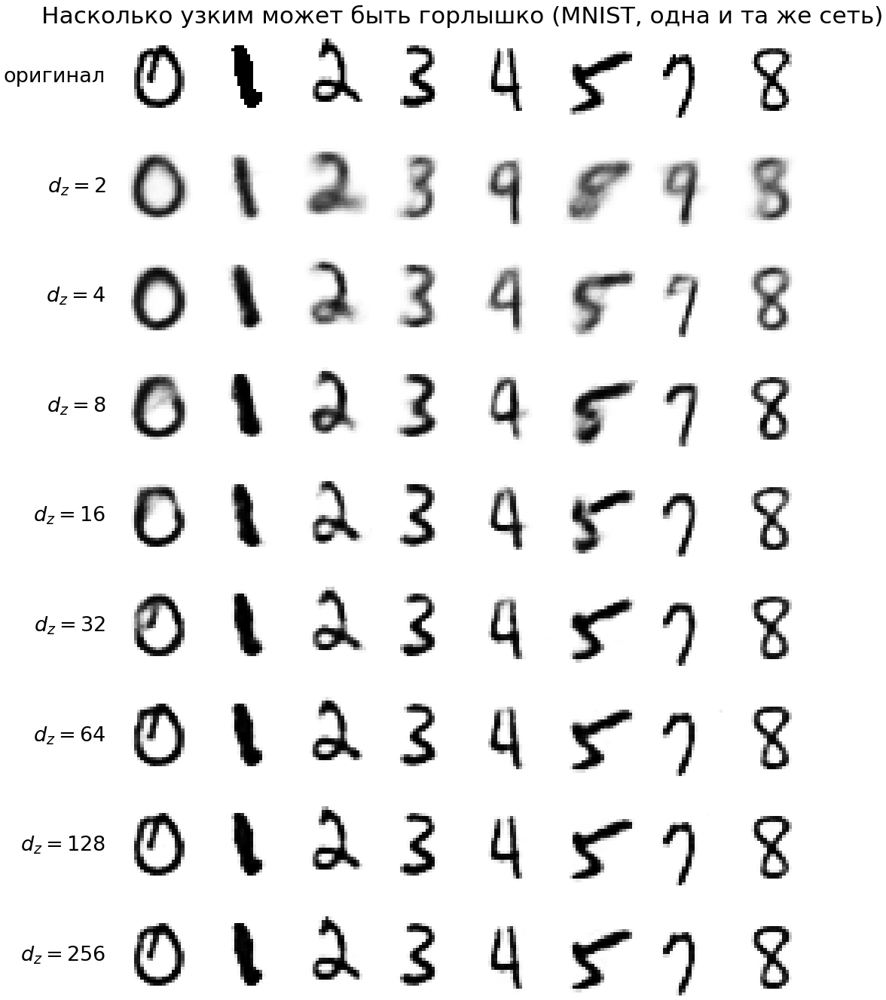
Одна и та же архитектура $784 \to 512 \to 256 \to d_z \to 256 \to 512 \to 784$, обученная на MNIST при восьми значениях $d_z$; верхний ряд — оригиналы. При $d_z = 2$ четвёрка превращается в девятку, семёрка — тоже в девятку, а пятёрка в неразличимое пятно: двух чисел не хватает, чтобы развести классы. Уже при $d_z = 4$ все восемь цифр узнаваемы, хотя и размыты, а начиная примерно с $d_z = 32$ отличия от оригинала сводятся к мелким деталям штриха. Задача Типичное $d_z / d_x$ Грубая детекция аномалий < 0.01 Визуализация 2–3 (абсолютных размерности) Предобучение признаков 0.1–0.5 Датасет: 200 технических показателей станка, $d_x = 200$.
Обучаем несколько автоэнкодеров с $d_z \in \{2, 8, 32, 100\}$ и смотрим ошибку восстановления на валидации:
- $d_z = 2$: ошибка 0.31 — слишком грубо, разные режимы работы неразличимы.
- $d_z = 8$: ошибка 0.09 — резкое улучшение.
- $d_z = 32$: ошибка 0.07 — прирост уже маленький.
- $d_z = 100$: ошибка 0.065 — почти не изменилась.
Берём $d_z = 8$: это «локоть» кривой — точка, после которой добавление размерностей почти не улучшает восстановление, а значит, дальше сеть просто начинает хранить шум.
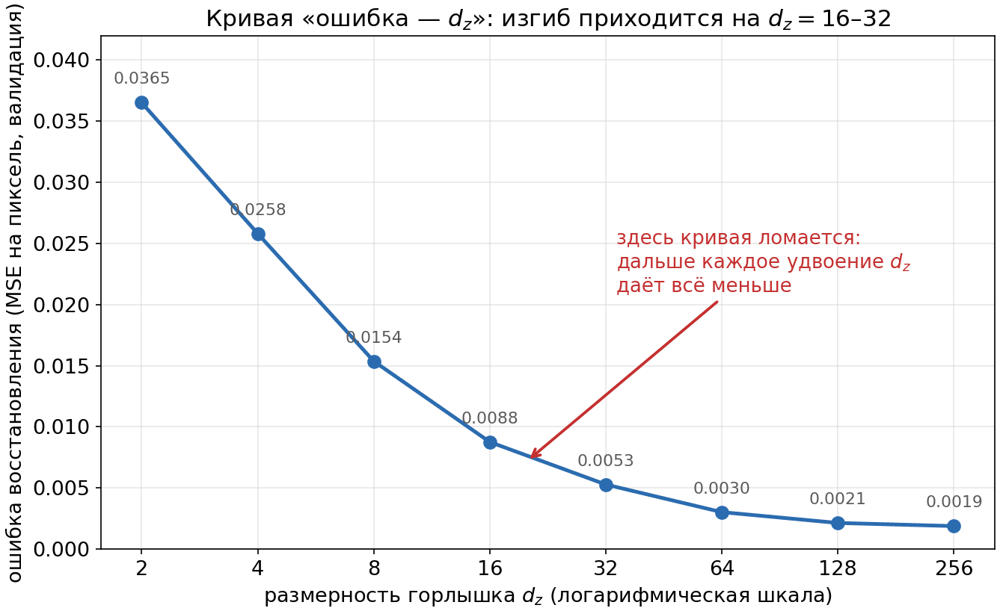
Та же серия моделей на MNIST, что и выше: по вертикали — MSE на пиксель на отложенной выборке, по горизонтали — $d_z$ в логарифмическом масштабе. Ошибка убывает монотонно и никогда не растёт, поэтому «лучшего» $d_z$ по ней не существует — ищут точку изгиба. Переход от $d_z = 2$ к $4$ убирает почти треть ошибки (0.0365 $\to$ 0.0258), а после $d_z = 16$ каждое удвоение даёт всё меньше: 0.0088 $\to$ 0.0053 $\to$ 0.0030. Это и есть локоть, только у реальных данных он размазан на пару значений, а не приходится ровно на одну точку. Само число $d_z$ в локте — свойство конкретного датасета: в примере выше, на 200 показателях станка, локоть пришёлся на $d_z = 8$, здесь на MNIST — на 16–32. Ёмкость (capacity) автоэнкодера — способность энкодера и декодера выполнять сложные преобразования. Её наращивают числом слоёв и нейронов, а не размером $d_z$.
Разделять эти две ручки важно: $d_z$ отвечает за то, сколько информации пройдёт через горлышко, а ёмкость — за то, насколько хитро эту информацию можно упаковать и распаковать. Хороший результат даёт мощный энкодер при узком горлышке; слабый энкодер при широком горлышке даёт плохие признаки при маленькой ошибке.
- Сжатие данных — компактное хранение и передача сигналов, изображений, звука.
- Снижение размерности для визуализации — например, проекция геномных профилей клеток в 2–3 измерения перед отрисовкой.
- Детекция аномалий — AE, обученный только на нормальных данных, плохо восстанавливает аномальные; ошибка восстановления служит сигналом отклонения.
- Предобучение признаков — энкодер, обученный без разметки, используется как feature extractor для последующей классификации.
- Считать, что достаточно узкого горлышка. При очень мощном энкодере и декодере сеть может закодировать вход почти без потерь даже в один-два нейрона, используя высокочастотные трюки — ошибка окажется маленькой, а признаки бессмысленными.
- Выбирать $d_z$ по ошибке восстановления. Она монотонно убывает с ростом $d_z$, поэтому «лучшее» значение по этой метрике — всегда самое большое. Смотреть надо на локоть кривой или на качество нижестоящей задачи.
- Путать сужающий и расширяющий AE. Сужающий ограничивает размерность, расширяющий даёт места с запасом и ограничивает представление регуляризатором (разреженностью, штрафом на якобиан).
- Использовать AE там, где хватает PCA. На линейных или почти линейных данных PCA даёт сопоставимое качество, работает детерминированно, за секунды и без подбора гиперпараметров.
Что такое сужающий автоэнкодер?
Автоэнкодер, у которого размерность скрытого представления меньше размерности входа ($d_z < d_x$). Ограничение размерности не позволяет сети скопировать вход и вынуждает её выучить сжатое представление данных.
Почему $d_z < d_x$ является формой регуляризации?
Через узкое горлышко физически нельзя пронести всю информацию входа. Сеть вынуждена отбросить часть, и отбрасывает наименее полезную для восстановления — случайные детали, оставляя устойчивые закономерности выборки.
Как сужающий AE связан с PCA?
При линейных активациях и MSE-потере он выучивает то же подпространство, что и первые $d_z$ главных компонент. С нелинейными активациями он становится нелинейным обобщением PCA и способен выучить искривлённое многообразие.
Как выбирают размерность скрытого слоя?
По кривой «ошибка восстановления против $d_z$»: берут точку локтя, после которой дальнейшее увеличение почти не снижает ошибку. Более надёжный способ — оценивать качество на целевой задаче (классификация, детекция аномалий), а не саму ошибку восстановления.
Чем ёмкость автоэнкодера отличается от размерности скрытого слоя?
Ёмкость — выразительность энкодера и декодера (глубина и ширина слоёв), она определяет, насколько сложное преобразование сеть способна выполнить. $d_z$ определяет только пропускную способность горлышка. Настраивают их независимо: мощный энкодер при узком $d_z$ даёт лучшие признаки.
Как сужающий AE используется для детекции аномалий?
Его обучают только на нормальных объектах. На аномалиях, которых сеть не видела, ошибка восстановления заметно выше, и по её порогу принимают решение. Метод особенно полезен, когда аномалий мало и размечать их дорого.
Когда лучше взять PCA вместо сужающего автоэнкодера?
Когда данных мало, зависимости близки к линейным или нужна воспроизводимость и скорость: PCA считается детерминированно, не требует подбора архитектуры и обучения, а на линейных данных даёт практически тот же результат.
-
Расширяющий автоэнкодер
Расширяющий (избыточный) автоэнкодер (Overcomplete Autoencoder) — автоэнкодер, у которого размерность скрытого пространства больше размерности входа: $d_z > d_x$. Дополнительное место позволяет выучить переопределённый базис признаков — более крупный и гибкий, чем исходное представление.
Если совсем простыми словами: вместо того чтобы ужимать вход, ему дают места с запасом. Было 784 числа — стало 2000. Смысл не в сжатии, а в том, чтобы описать объект не координатами пикселей, а набором понятных «деталей»: вот край под углом 30°, вот пятно, вот текстура. Деталей в словаре много, но у каждого конкретного объекта их задействовано мало.
Само по себе расширение бесполезно и даже вредно: раз места больше, чем нужно, у сети есть очевидная лазейка — выучить тождественное отображение $g_\theta(f_\phi(\mathbf{x})) = \mathbf{x}$.
Ошибка восстановления будет ровно нулевой, а признаки — никакими: сеть просто протащила вход насквозь. Поэтому расширяющий автоэнкодер никогда не используют без дополнительного ограничения на вид скрытого представления.
Метод Ограничение на $\mathbf{z}$ Разреженный AE $\|\mathbf{z}\|_1$ мал — одновременно активны лишь несколько нейронов Ограниченная машина Больцмана (RBM) скрытые единицы бинарны Контрактивный AE штраф на норму якобиана энкодера Общая логика во всех трёх случаях одинакова: раз мы не ограничиваем размер представления, надо ограничить его форму.
Разреженный автоэнкодер
Разреженный автоэнкодер (Sparse AE) — самый распространённый вид расширяющего AE. К ошибке восстановления добавляется $\ell_1$-штраф на активации скрытого слоя:
$$\mathcal{L} = \|\mathbf{x} - g_\theta(f_\phi(\mathbf{x}))\|^2 + \lambda \sum_j |z_j|$$
Здесь $z_j$ — активация $j$-го скрытого нейрона, а $\lambda$ регулирует силу требования разреженности. Штраф «наказывает» за любые ненулевые активации, поэтому сети выгодно держать большинство нейронов в нуле и включать лишь те, без которых восстановление сломается.
Когда одновременно разрешено активироваться лишь нескольким нейронам из тысяч, каждому из них приходится «специализироваться»: отвечать за конкретную повторяющуюся деталь входа.
Нейрон, который включается на самых разных объектах понемногу, штрафуется постоянно и почти ничего не объясняет. Нейрон, который включается редко, но сильно и всегда на одном и том же типе структуры, — окупает свой штраф.
В итоге скрытый слой превращается в словарь детекторов: этот нейрон реагирует на вертикальный край, тот — на диагональ под 45°, тот — на цветовое пятно. Такое кодирование называют разреженным (sparse coding), и оно биологически правдоподобно: в зрительной коре на конкретный стимул тоже реагирует малая доля нейронов.
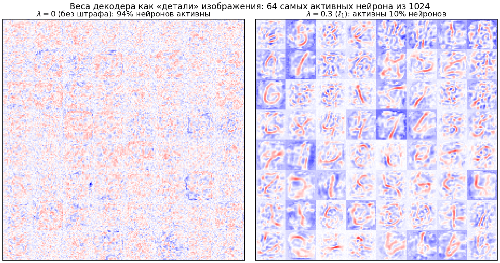
Каждая клетка — веса декодера для одного скрытого нейрона, то есть та «деталь», которую он добавляет в картинку, когда включается: красное — положительные веса, синее — отрицательные. Слева расширяющий AE $784 \to 1024 \to 784$ без штрафа: веса выглядят как случайная рябь, отдельного смысла у нейрона нет. Справа тот же AE с $\ell_1$-штрафом ($\lambda = 0.3$): проступают штрихи, дуги и петли — нейроны специализировались на повторяющихся фрагментах цифр. В обеих панелях показаны 64 самых часто срабатывающих нейрона из 1024, цветовая шкала своя в каждой панели. Спам-фильтр кодирует письмо в скрытый вектор длины 1000 при входе из 300 признаков.
- Письмо про доставку заказа: активны нейроны №14 («трек-номер»), №221 («адрес»), №703 («сроки») — три из тысячи.
- Рекламная рассылка: активны №58 («скидка»), №59 («ограниченное время»), №410 («ссылка-редирект»).
- Фишинг: активны №410 («ссылка-редирект»), №802 («срочная просьба»), №921 («упоминание пароля»).
Обратите внимание: словарь общий, но у каждого письма включено 3 нейрона из 1000. Пересечение по нейрону №410 сразу говорит, что у рекламы и фишинга есть общая структурная деталь — и это интерпретируемо, чего не даёт плотный вектор из 32 чисел, где каждое число означает «всё сразу понемногу».
Разреженность можно требовать не поэлементно, а «в среднем». Пусть $\hat{\rho}_j$ — средняя активация $j$-го нейрона по батчу, а $\rho$ — желаемое малое значение (например, $0.05$: нейрон должен быть активен на 5% объектов). Тогда штрафуют расхождение между ними по KL-дивергенции:
$$\mathcal{L}_{\text{sparse}} = \sum_j \mathrm{KL}(\rho \,\|\, \hat{\rho}_j) = \sum_j \left[\rho \log\frac{\rho}{\hat{\rho}_j} + (1-\rho)\log\frac{1-\rho}{1-\hat{\rho}_j}\right]$$
Разница в смысле: $\ell_1$ говорит «на каждом объекте активных нейронов должно быть мало», KL-штраф говорит «каждый нейрон должен срабатывать редко». Второе дополнительно борется с ситуацией, когда часть нейронов вообще никогда не используется.
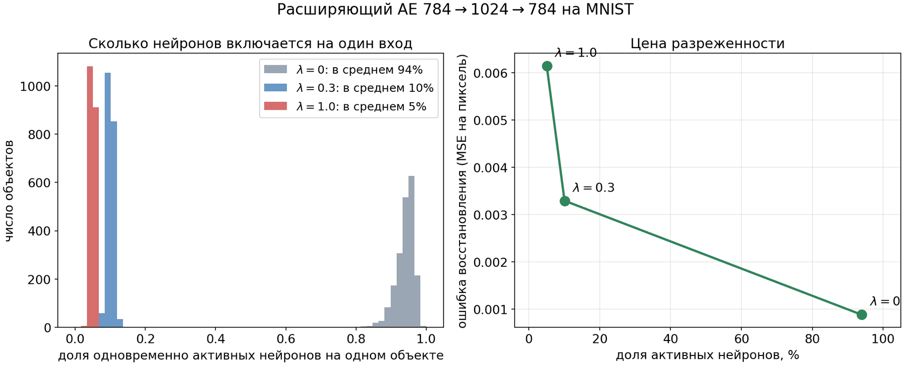
Тот же расширяющий AE $784 \to 1024 \to 784$ при трёх значениях $\lambda$. Слева — сколько нейронов включается одновременно на одном объекте: без штрафа почти все (серый столбик, 94%), при $\lambda = 0.3$ — около 10% (синий), при $\lambda = 1.0$ — 5% (красный). Справа — плата за это: ошибка восстановления растёт с 0.0009 до 0.0033 и 0.0062, то есть по этой метрике разреженный AE всегда «хуже», и сравнивать модели по ней бессмысленно. Есть и побочный эффект, на графике не видный: при $\lambda = 1.0$ 87% нейронов не сработали ни разу на всей проверочной выборке — это те самые мёртвые нейроны, против которых и придуман KL-вариант штрафа. Контрактивный автоэнкодер
Контрактивный автоэнкодер (Contractive AE, CAE, 2011) добавляет к ошибке восстановления штраф на норму Фробениуса якобиана энкодера по входу:
$$\mathcal{L} = \|\mathbf{x} - g_\theta(f_\phi(\mathbf{x}))\|^2 + \lambda \|J_{f_\phi}(\mathbf{x})\|_F^2$$
Якобиан $J_{f_\phi}$ — матрица частных производных скрытого вектора по входу: она показывает, насколько сильно дёрнется $\mathbf{z}$, если чуть-чуть пошевелить $\mathbf{x}$. Норма Фробениуса — сумма квадратов всех её элементов, то есть суммарная чувствительность.
Штраф требует, чтобы скрытое представление было нечувствительно к малым изменениям входа: сдвинули картинку на пиксель, добавили каплю шума — $\mathbf{z}$ практически не изменился. Энкодер как бы «сжимает» (contracts) окрестность каждой обучающей точки в почти одну точку.
Но полностью нечувствительным он стать не может: ошибка восстановления требует различать разные объекты. Возникает компромисс — представление игнорирует изменения поперёк многообразия данных (шум, мелкие искажения) и остаётся чувствительным вдоль него (смена цифры, смена ракурса).
Именно поэтому CAE хорошо извлекает структуру многообразия: он явно учит, в каких направлениях данные «настоящим образом» меняются, а в каких — нет.
Оба метода добиваются устойчивости представления к малым возмущениям входа, но разными путями:
- DAE делает это эмпирически: реально портит входы и смотрит, получится ли восстановить. Устойчивость возникает как побочный эффект.
- CAE делает это аналитически: прямо штрафует производные, не порождая никакого шума.
DAE проще и дешевле (не нужно считать якобиан), поэтому на практике встречается чаще; CAE даёт более прямой контроль и красивее теоретически.
- Словари признаков. Разреженный AE, обученный на патчах изображений, самостоятельно открывает фильтры, похожие на рецептивные поля первичной зрительной коры: ориентированные края и решётки.
- Интерпретируемость LLM. Разреженные автоэнкодеры сегодня — основной инструмент «распаковки» суперпозиции признаков в активациях языковых моделей: тысячи понятий, наложенных на несколько тысяч нейронов, раскладываются в десятки тысяч разреженных интерпретируемых направлений. Направление называется mechanistic interpretability.
- Аудио. Разреженное кодирование звуковых сигналов для разделения источников (выделить голос из смеси).
- Обучить расширяющий AE без регуляризации и удивиться нулевой ошибке восстановления. Это не успех, а тождественное отображение: признаки бесполезны.
- Считать маленькую ошибку восстановления критерием качества. У разреженного AE она заведомо хуже, чем у нерегуляризованного, — и это нормально, качество меряют интерпретируемостью и пользой признаков.
- Взять слишком большой $\lambda$. Разреженность станет тотальной: почти все нейроны в нуле, восстановление разваливается. Слишком маленький $\lambda$ — регуляризация не работает вовсе. $\lambda$ подбирают по компромиссу «доля активных нейронов против ошибки восстановления».
- Путать разреженность с dropout. Dropout выключает нейроны случайно и только при обучении; разреженность — выученное свойство, оно сохраняется на инференсе и определяется данными.
Что такое расширяющий автоэнкодер?
Автоэнкодер, у которого размерность скрытого слоя больше размерности входа ($d_z > d_x$). Цель — не сжатие, а построение переопределённого словаря признаков, где каждый объект описывается небольшим числом активных элементов.
Почему расширяющий AE нельзя обучать без регуляризации?
Потому что при избыточной размерности существует тривиальное решение — тождественное отображение. Сеть протащит вход на выход с нулевой ошибкой и не выучит никаких полезных признаков.
Как устроен разреженный автоэнкодер?
К ошибке восстановления добавляется штраф на активации скрытого слоя — $\ell_1$-норма $\lambda\sum_j |z_j|$ либо KL-дивергенция средней активации нейрона от малого целевого значения $\rho$. В результате на каждом объекте активна лишь малая доля нейронов.
Чем $\ell_1$-штраф отличается от KL-штрафа на разреженность?
$\ell_1$ действует на каждый объект отдельно: «на этом входе активных нейронов должно быть мало». KL-штраф действует на нейрон в среднем по выборке: «этот нейрон должен срабатывать примерно на доле $\rho$ объектов», что дополнительно предотвращает появление вечно неактивных нейронов.
Почему разреженность делает признаки интерпретируемыми?
Когда одновременно активны единицы нейронов из тысяч, каждому выгодно специализироваться на конкретной повторяющейся структуре входа. Нейрон становится детектором одного признака (края, текстуры, понятия), а не смесью всего сразу.
Что штрафует контрактивный автоэнкодер и зачем?
Норму Фробениуса якобиана энкодера по входу, то есть суммарную чувствительность скрытого представления к малым изменениям $\mathbf{x}$. Это делает $\mathbf{z}$ устойчивым к шуму и мелким искажениям, но чувствительным к движению вдоль многообразия данных.
Чем контрактивный автоэнкодер отличается от шумоподавляющего?
Оба добиваются устойчивости представления, но DAE — эмпирически, реально зашумляя входы, а CAE — аналитически, штрафуя производные. DAE дешевле в вычислении и потому чаще применяется на практике.
Где расширяющие автоэнкодеры используются сегодня?
Главное современное применение — mechanistic interpretability: разреженные автоэнкодеры раскладывают активации языковых моделей на большое число интерпретируемых признаков. Также — построение словарей признаков в компьютерном зрении и разделение источников в аудио.
-
VAE (2013)
Вариационный автоэнкодер (Variational Autoencoder, VAE) — вероятностная генеративная модель, предложенная Кингмой и Веллингом (Kingma & Welling) в 2013 году. В отличие от обычного автоэнкодера, энкодер выдаёт не точку, а распределение над скрытым пространством — и это превращает автоэнкодер в генератор новых объектов.
Если совсем простыми словами: обычный AE говорит «эта картинка — вот эта точка», а VAE говорит «эта картинка — вот это облачко». Соседние облачка перекрываются, пустот между ними не остаётся, и потому любая точка скрытого пространства расшифровывается во что-то осмысленное — в том числе точка, которую мы придумали сами.
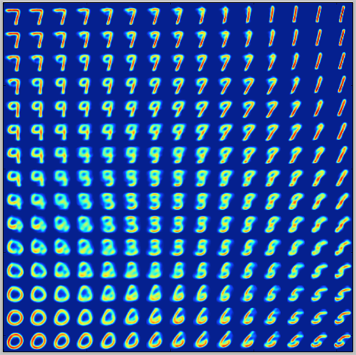
Движение по скрытому пространству VAE даёт плавный переход от одной цифры к другой: промежуточные точки — не мусор, а осмысленные промежуточные формы. Это и есть свойство регулярности, которого нет у обычного AE. - Энкодер $q_\phi(\mathbf{z} \mid \mathbf{x})$ — приближает апостериорное распределение скрытого вектора при данном объекте. На практике берут факторизованное гауссово: энкодер выдаёт вектор средних $\boldsymbol{\mu}$ и вектор логарифмов дисперсий $\log \boldsymbol{\sigma}^2$.
- Декодер $p_\theta(\mathbf{x} \mid \mathbf{z})$ — восстанавливает объект по точке $\mathbf{z}$, вытянутой из этого распределения.
То есть на каждый вход энкодер возвращает $2 d_z$ чисел: центр «облачка» и его разброс по каждой оси.
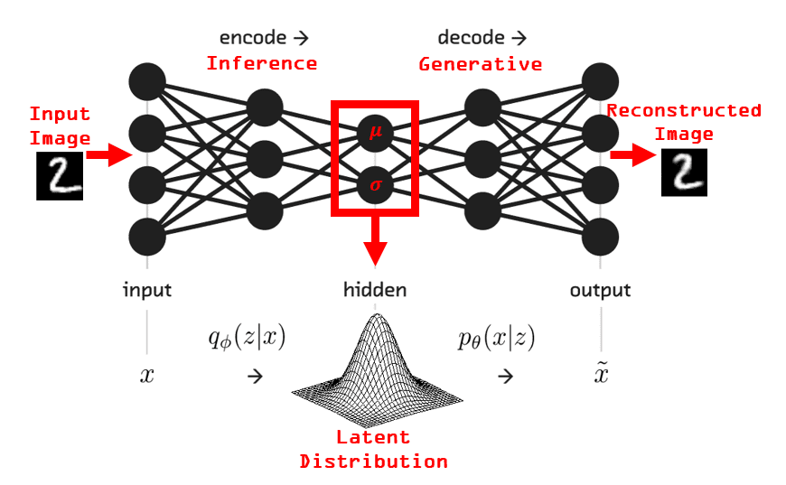
Красной рамкой выделен скрытый слой: энкодер $q_\phi(z \mid x)$ выдаёт на каждую координату не одно число, а пару $\boldsymbol{\mu}$ и $\boldsymbol{\sigma}$ — параметры распределения, нарисованного колоколом внизу. Декодер $p_\theta(x \mid z)$ восстанавливает картинку уже из точки, вытянутой из этого распределения. Подписи inference и generative подчёркивают разделение ролей: левая половина выводит скрытую переменную по объекту, правая порождает объект по скрытой переменной. Мелкая, но важная деталь реализации: сеть предсказывает $\log \sigma^2$, а не $\sigma^2$ напрямую.
Причина в том, что дисперсия обязана быть положительной, а выход линейного слоя может быть любым. Предсказывая логарифм, мы получаем $\sigma = \exp(\tfrac{1}{2}\log\sigma^2)$ — величину, положительную автоматически, при любом выходе сети. Заодно это стабилизирует обучение: очень маленькие дисперсии соответствуют умеренным по модулю логарифмам, а не числам порядка $10^{-8}$.
Прямое сэмплирование $\mathbf{z} \sim \mathcal{N}(\boldsymbol{\mu}, \boldsymbol{\sigma}^2)$ недифференцируемо: через генератор случайных чисел градиент не проходит. Решение — трюк репараметризации (reparameterization trick):
$$\mathbf{z} = \boldsymbol{\mu} + \boldsymbol{\sigma} \odot \boldsymbol{\epsilon}, \quad \boldsymbol{\epsilon} \sim \mathcal{N}(0, I)$$
Случайность вынесена во внешний шум $\boldsymbol{\epsilon}$, который не зависит от параметров сети. Теперь $\mathbf{z}$ — обычная дифференцируемая функция от $\boldsymbol{\mu}$ и $\boldsymbol{\sigma}$, и обратное распространение работает.
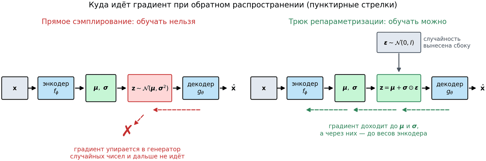
Обе схемы читаются слева направо, пунктирные стрелки — обратный проход. Слева: если $\mathbf{z}$ тянут прямо из $\mathcal{N}(\boldsymbol{\mu}, \boldsymbol{\sigma}^2)$ (красный блок), градиент от декодера доходит до этого блока и упирается — через генератор случайных чисел производную не пронести, энкодер не получает никакого сигнала. Справа: шум $\boldsymbol{\epsilon}$ приходит сбоку, как обычный вход, $\mathbf{z}$ становится формулой $\boldsymbol{\mu} + \boldsymbol{\sigma} \odot \boldsymbol{\epsilon}$, и зелёный пунктир беспрепятственно проходит через $\boldsymbol{\mu}$ и $\boldsymbol{\sigma}$ в энкодер. Представьте, что нужно взять случайное число из распределения со средним 5 и разбросом 2.
Можно попросить генератор «дай мне число из $\mathcal{N}(5, 4)$» — но тогда непонятно, как ответ зависит от пятёрки и двойки: генератор внутри чёрный ящик.
А можно взять стандартный случайный шум $\epsilon$ (скажем, выпало $0.3$) и посчитать $5 + 2 \cdot 0.3 = 5.6$. Результат тот же по распределению, но теперь видно: если увеличить среднее на единицу, ответ увеличится на единицу; производная по $\boldsymbol{\mu}$ равна 1, по $\boldsymbol{\sigma}$ равна $\epsilon$. Ровно это и делает репараметризация.
VAE максимизирует нижнюю оценку логарифма правдоподобия (Evidence Lower Bound, ELBO):
$$\mathcal{L}_{\text{ELBO}} = \underbrace{\mathbb{E}_{q_\phi(\mathbf{z}|\mathbf{x})}[\log p_\theta(\mathbf{x} \mid \mathbf{z})]}_{\text{ошибка восстановления}} - \underbrace{\mathrm{KL}(q_\phi(\mathbf{z}|\mathbf{x}) \,\|\, p(\mathbf{z}))}_{\text{регуляризация}}$$
Два слагаемых тянут в разные стороны:
- Ошибка восстановления — насколько точно декодер воссоздал вход. Это тот же член, что у обычного AE.
- KL-дивергенция — штраф за отклонение выданного энкодером распределения от априорного $p(\mathbf{z}) = \mathcal{N}(0, I)$.
Без второго слагаемого энкодеру выгодно сделать $\sigma \to 0$ и разбросать средние далеко друг от друга: тогда облачка превращаются в точки, объекты не путаются, восстановление идеально — и мы получаем обычный AE со всеми его пустотами.
KL-штраф этого не позволяет. Он требует, чтобы каждое $q_\phi(\mathbf{z}\mid\mathbf{x})$ было похоже на $\mathcal{N}(0, I)$, то есть:
- центры не разбегались — все $\boldsymbol{\mu}$ прижаты к нулю;
- разброс не схлопывался — $\sigma$ не может стать нулевым.
В результате облачка вынуждены перекрываться, и всё пространство вокруг нуля оказывается покрытым. Именно поэтому случайная точка из $\mathcal{N}(0, I)$ декодируется во что-то осмысленное: декодер обучался в этой области.
Для гауссовых распределений KL считается в закрытом виде, без сэмплирования:
$$\mathrm{KL}(q_\phi \,\|\, p) = -\frac{1}{2} \sum_{j=1}^{d_z} \left(1 + \log \sigma_j^2 - \mu_j^2 - \sigma_j^2\right)$$
Здесь хорошо видна структура штрафа: член $\mu_j^2$ штрафует уход центра от нуля, а комбинация $\log\sigma_j^2 - \sigma_j^2$ достигает максимума при $\sigma_j = 1$ — то есть наказывает и за схлопывание разброса, и за его раздувание. Выражение обращается в ноль ровно тогда, когда $\mu_j = 0$ и $\sigma_j = 1$.
Скрытое пространство VAE регулярно: оно непрерывно и без пустот. Отсюда два практически важных следствия:
- Сэмплирование работает. Берём $\mathbf{z} \sim \mathcal{N}(0, I)$, подаём в декодер — получаем новый правдоподобный объект, которого не было в обучающей выборке.
- Интерполяция осмысленна. Точки на отрезке между кодировками двух объектов декодируются в плавный переход между ними.
У обычного AE ни того ни другого нет: между кластерами кодировок находятся области, где декодер никогда не обучался, и там он выдаёт бессмыслицу.
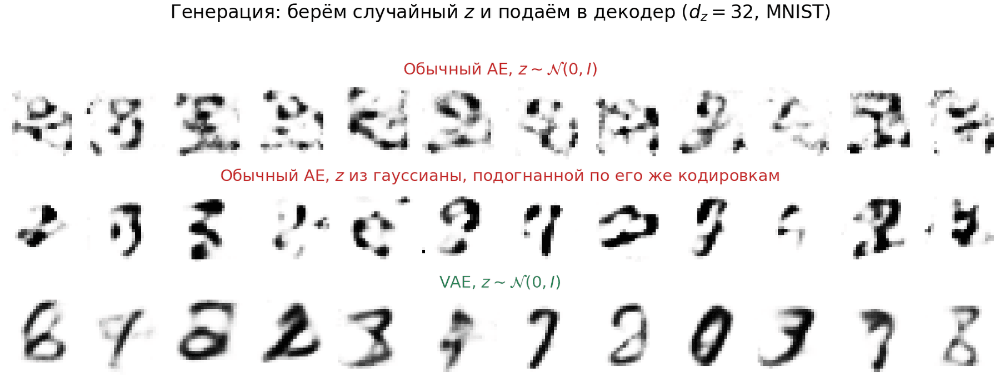
Обе модели обучены на MNIST при $d_z = 32$; в каждом ряду по 12 выходов декодера, и верхний с нижним рядом построены на одном и том же наборе случайных векторов. Верхний ряд: обычный AE, $\mathbf{z} \sim \mathcal{N}(0, I)$ — сплошные кляксы. Средний ряд: тому же AE дали фору и взяли гауссиану со средним и дисперсией его собственных кодировок — обрывки штрихов появились, но цифр по-прежнему нет. Нижний ряд: VAE, сэмплирование из того же $\mathcal{N}(0, I)$ — узнаваемые цифры. Разницу создаёт не устройство декодера, а KL-штраф: он заранее подогнал распределение кодировок под то, из которого мы сэмплируем. 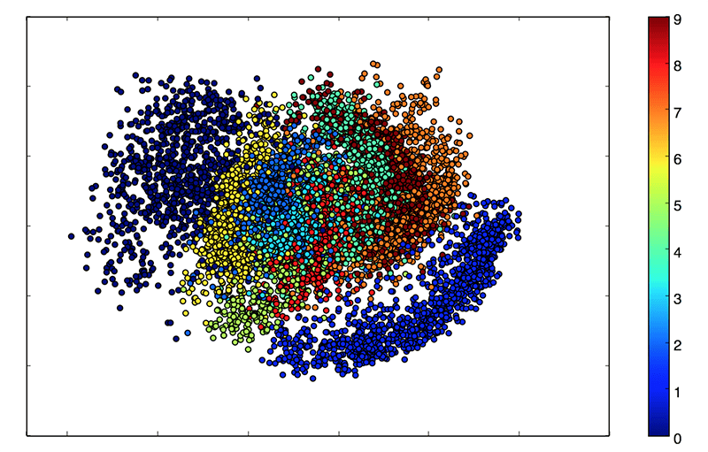
Каждая точка — кодировка одного объекта, цвет соответствует классу цифры по шкале справа (от 0 внизу шкалы до 9 наверху). Кластеры соприкасаются и перекрываются, заполняя одно связное облако без пустот между ними; обособленно держатся только нули (тёмно-синие, слева) и единицы (синие, справа внизу). Именно эта плотная упаковка и делает возможной генерацию. Обучили VAE с $d_z = 128$ на датасете фотографий лиц.
- Тянем $\mathbf{z} \sim \mathcal{N}(0, I)$ — 128 случайных чисел.
- Подаём в декодер — получаем лицо, которого не существует.
- Берём два реальных лица, кодируем их в $\mathbf{z}_1$ и $\mathbf{z}_2$, декодируем точки $\alpha\mathbf{z}_1 + (1-\alpha)\mathbf{z}_2$ при $\alpha$ от 0 до 1 — получаем плавную морфинг-последовательность.
- Находим направление «улыбка»: усредняем $\mathbf{z}$ улыбающихся лиц, вычитаем среднее по неулыбающимся. Прибавив этот вектор к любому $\mathbf{z}$, добавляем улыбку.
Пункт 4 — характерная демонстрация того, что скрытое пространство не только непрерывно, но и структурировано: семантические атрибуты в нём соответствуют направлениям.
- Posterior collapse. Если декодер слишком мощный (например, авторегрессионный), ему выгодно игнорировать $\mathbf{z}$ и генерировать всё «из себя». KL-член уходит в ноль, $q_\phi$ схлопывается в априорное, скрытое представление перестаёт нести информацию. Лечится KL-annealing (постепенным включением KL-члена) или ограничением мощности декодера.
- Размытые изображения. Классическая слабость VAE: при MSE-восстановлении оптимально предсказывать среднее по всем правдоподобным вариантам, а среднее нескольких чётких картинок — размытая картинка. GAN этой проблемы лишён, потому что его лосс не усредняет.
- Сэмплировать там, где нужно детерминированное восстановление. Если задача — восстановить или закодировать конкретный объект, на инференсе берут $\mathbf{z} = \boldsymbol{\mu}$ (без шума), иначе один и тот же вход будет каждый раз давать разный выход. Сэмплирование $\boldsymbol{\epsilon}$ нужно при обучении и при генерации новых объектов.
- Считать ELBO сопоставимой между моделями. Значение ELBO зависит от способа моделирования $p_\theta(\mathbf{x}\mid\mathbf{z})$ и масштаба данных, поэтому напрямую сравнивать его у моделей с разными декодерами некорректно.
- Генерация изображений — лица, цифры, молекулы; сэмплированием из $\mathcal{N}(0, I)$.
- Условная генерация (CVAE) — метка класса подаётся на вход и энкодеру, и декодеру, что позволяет запросить объект заданного типа.
- Молекулярный дизайн — молекулы кодируются в непрерывное пространство, где можно вести градиентную оптимизацию по нужному свойству и декодировать результат обратно в молекулу.
- Сжатие и латентные пространства для других моделей — современные диффузионные генераторы изображений работают не в пикселях, а в латентном пространстве предобученного автоэнкодера.
Чем VAE отличается от обычного автоэнкодера?
Энкодер VAE выдаёт не точку, а параметры распределения ($\boldsymbol{\mu}$ и $\log\boldsymbol{\sigma}^2$), из которого сэмплируется $\mathbf{z}$, а к функции потерь добавлен KL-штраф, прижимающий это распределение к $\mathcal{N}(0, I)$. Благодаря этому VAE — полноценная генеративная модель, а обычный AE — нет.
Что такое трюк репараметризации и зачем он нужен?
Запись $\mathbf{z} = \boldsymbol{\mu} + \boldsymbol{\sigma} \odot \boldsymbol{\epsilon}$, где $\boldsymbol{\epsilon} \sim \mathcal{N}(0, I)$. Она выносит случайность в независимый от параметров шум, делая $\mathbf{z}$ дифференцируемой функцией выходов энкодера. Без этого градиент не прошёл бы через операцию сэмплирования.
Из каких слагаемых состоит ELBO и что делает каждое?
Из ошибки восстановления $\mathbb{E}_{q}[\log p_\theta(\mathbf{x}\mid\mathbf{z})]$, отвечающей за точность воспроизведения входа, и KL-дивергенции $\mathrm{KL}(q_\phi \| p)$, штрафующей отклонение апостериорного распределения от априорного $\mathcal{N}(0, I)$. Первое тянет к точности, второе — к регулярности пространства.
Почему скрытое пространство VAE регулярно, а у обычного AE — нет?
KL-штраф не даёт центрам кодировок разбегаться, а разбросам — схлопываться в точку, поэтому «облачка» разных объектов перекрываются и покрывают всю область вокруг нуля. У обычного AE кодировки могут разлетаться сколь угодно далеко, между ними образуются пустоты, где декодер ничему не обучался.
Почему энкодер предсказывает $\log \sigma^2$, а не $\sigma^2$?
Потому что дисперсия обязана быть положительной, а выход линейного слоя — произвольное число. Экспонирование логарифма гарантирует положительность автоматически и делает обучение численно устойчивее при очень малых дисперсиях.
Что такое posterior collapse?
Ситуация, когда KL-член обнуляется: энкодер выдаёт ровно априорное распределение, а достаточно мощный декодер генерирует объекты, игнорируя $\mathbf{z}$. Скрытое представление перестаёт нести информацию о входе. Борются KL-annealing, ограничением мощности декодера, свободным битом (free bits).
Почему изображения от VAE обычно размытые?
Потому что при гауссовом декодере (MSE-восстановлении) оптимальный по функции потерь ответ — среднее по всем правдоподобным восстановлениям, а усреднение нескольких чётких вариантов даёт размытие. GAN избегает этого, поскольку его лосс требует не среднего, а неотличимости от реальных данных.
Как VAE соотносится с GAN?
VAE обучается по явной вероятностной оценке (ELBO), даёт стабильное обучение, осмысленный энкодер и регулярное латентное пространство, но размытые сэмплы. GAN обучается состязательно, даёт более чёткие изображения, но нестабилен, склонен к схлопыванию мод и не имеет встроенного энкодера.
-
GAN (2014)
Генеративно-состязательная сеть (Generative Adversarial Network, GAN) — способ обучать генеративную модель, предложенный Гудфеллоу и соавторами (Goodfellow et al.) в 2014 году. Две нейросети — генератор и дискриминатор — обучаются одновременно, соревнуясь друг с другом.
Если совсем простыми словами: это фальшивомонетчик и эксперт. Фальшивомонетчик печатает купюры и несёт эксперту; эксперт учится отличать подделки от настоящих. Каждый раз, когда эксперт ловит подделку, фальшивомонетчик узнаёт, на чём прокололся, и печатает лучше. Каждый раз, когда подделка проходит, эксперт учится смотреть внимательнее. Если процесс не разваливается, в пределе подделки становятся неотличимы от настоящих денег.
- Генератор $G_\theta$ — принимает случайный шум $\mathbf{z} \sim p(\mathbf{z})$ (обычно $\mathcal{N}(0, I)$) и превращает его в «фейковый» объект $\hat{\mathbf{x}} = G_\theta(\mathbf{z})$. Настоящих данных он никогда не видит: единственный сигнал о них приходит через градиент от дискриминатора.
- Дискриминатор $D_\phi$ — обычный бинарный классификатор: получает объект и выдаёт вероятность того, что он настоящий.
Обучают их поочерёдно: шаг обновления $D$, шаг обновления $G$, и так по кругу.
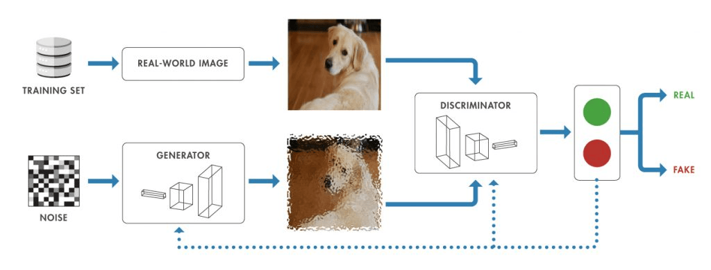
Генератор превращает шум $\mathbf{z}$ в изображение, дискриминатор получает вперемешку настоящие и сгенерированные объекты и выносит вердикт. Градиент от ошибки дискриминатора проходит насквозь в генератор — так генератор узнаёт, что именно выдало подделку. Формально GAN решает задачу:
$$\min_\theta \max_\phi \; \mathbb{E}_{\mathbf{x} \sim p_{\text{data}}}[\log D_\phi(\mathbf{x})] + \mathbb{E}_{\mathbf{z} \sim p(\mathbf{z})}[\log(1 - D_\phi(G_\theta(\mathbf{z})))]$$
- Дискриминатор максимизирует это выражение: хочет $D(\mathbf{x}) \to 1$ на настоящих и $D(G(\mathbf{z})) \to 0$ на фейках.
- Генератор минимизирует его: хочет, чтобы $D(G(\mathbf{z})) \to 1$, то есть чтобы дискриминатор принял подделку за настоящее.
Это игра с нулевой суммой: выигрыш одного — проигрыш другого. Обратите внимание, что генератор влияет только на второе слагаемое: первое от него не зависит.
При фиксированном генераторе оптимальный дискриминатор равен
$$D^*(\mathbf{x}) = \frac{p_{\text{data}}(\mathbf{x})}{p_{\text{data}}(\mathbf{x}) + p_G(\mathbf{x})}$$
то есть просто отвечает «какова доля настоящих объектов среди всех объектов, похожих на этот». Если подставить $D^*$ обратно в целевую функцию, задача генератора сводится к минимизации дивергенции Йенсена–Шеннона между $p_G$ и $p_{\text{data}}$.
Отсюда точка равновесия по Нэшу: $p_G = p_{\text{data}}$, и тогда $D^*(\mathbf{x}) = 1/2$ всюду — дискриминатор не может отличить настоящее от подделки и вынужден угадывать монеткой. Это важный ориентир: на здоровом обучении $D$ должен колебаться около 0.5, а не побеждать.
Обучаем GAN на лицах. Смотрим на выход дискриминатора на фейках:
- $D(G(\mathbf{z})) \approx 0.01$ и не растёт — дискриминатор победил, генератор ничего не может; градиент у генератора почти нулевой, картинки не улучшаются.
- $D(G(\mathbf{z})) \approx 0.99$ — генератор нашёл дыру в дискриминаторе и эксплуатирует одну удачную картинку; почти наверняка это схлопывание мод.
- $D(G(\mathbf{z}))$ колеблется около $0.4$–$0.6$ — здоровая динамика, обе сети растут вместе.
Именно поэтому у GAN лоссы не «сходятся к нулю», как у обычных сетей: их значения — счёт в игре, а не мера качества. Качество приходится оценивать отдельно, метриками вроде FID.
Проблемы обучения
Генератор находит несколько объектов, которые надёжно обманывают дискриминатор, и начинает выдавать только их, игнорируя всё разнообразие данных. Формально $p_G$ покрывает лишь часть $p_{\text{data}}$.
Пример: GAN, обученный на MNIST, выдаёт только тройки и восьмёрки — при этом дискриминатор доволен, ведь каждая отдельная картинка выглядит как настоящая цифра. Функция потерь не наказывает за отсутствие разнообразия: она смотрит на объекты по одному.
Средства борьбы: minibatch discrimination (дискриминатор смотрит на батч целиком и замечает однообразие), unrolled GAN, WGAN-GP.
Если дискриминатор становится слишком хорош, он уверенно ставит фейкам оценку около нуля. Но функция $\log(1 - D(G(\mathbf{z})))$ при $D \to 0$ насыщается: её производная стремится к нулю, и генератор перестаёт получать полезный сигнал именно тогда, когда он ему нужнее всего.
Стандартное лечение — non-saturating loss: вместо минимизации $\log(1 - D(G(\mathbf{z})))$ генератор максимизирует $\log D(G(\mathbf{z}))$. Точка оптимума та же, но градиент при плохом генераторе, наоборот, большой. Это то, что реально используется во всех практических реализациях.
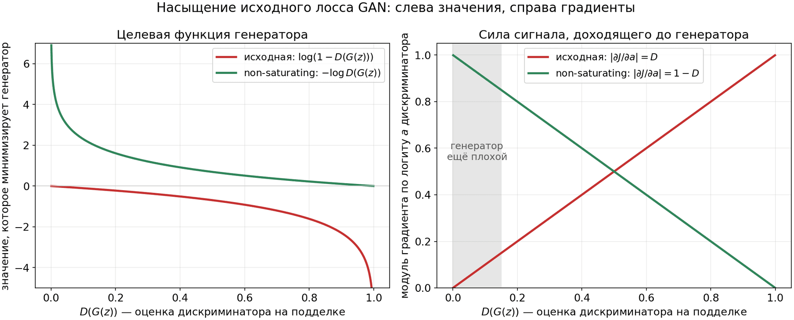
По горизонтали на обеих панелях — оценка $D(G(\mathbf{z}))$, которую дискриминатор ставит подделке: чем она ближе к нулю (левый край, серая зона), тем увереннее он ловит фейки и тем хуже дела у генератора. Слева сами целевые функции: красная $\log(1 - D)$ и зелёная $-\log D$. Справа — модуль градиента по логиту $a$ дискриминатора ($D = \sigma(a)$): у исходного варианта он равен $D$ и обращается в ноль ровно в серой зоне, где помощь нужнее всего, а у non-saturating равен $1 - D$ и там же достигает максимума. Обратите внимание, что минимум обе функции ищут в одной стороне — вправо, к $D \to 1$; отличается только сила сигнала по пути. Обучение GAN — не спуск в минимум, а поиск седловой точки: обе сети двигают ландшафт друг для друга. Отсюда типичные болезни:
- одна сеть обгоняет другую, и обучение расходится или замирает;
- решение осциллирует, не сходясь ни к чему;
- качество внезапно рушится посреди обучения после сотен нормальных эпох.
Практические приёмы: разные learning rate для $G$ и $D$ (правило two time-scale, TTUR), спектральная нормализация в дискриминаторе, аккуратная инициализация, сохранение промежуточных чекпойнтов.
WGAN (2017) меняет саму меру расхождения: вместо JS-дивергенции используется расстояние Вассерштейна («стоимость перевозки» одной кучи вероятностной массы в другую).
Практические отличия:
- Дискриминатор превращается в критика: он выдаёт не вероятность из $[0,1]$, а произвольное вещественное число — оценку «насколько объект похож на настоящий».
- На критика накладывается ограничение Липшица (сначала клиппингом весов, затем градиентным штрафом — WGAN-GP).
- Расстояние Вассерштейна осмысленно даже когда распределения не пересекаются, поэтому градиент не исчезает, и значение лосса коррелирует с качеством — по нему наконец можно следить за обучением.
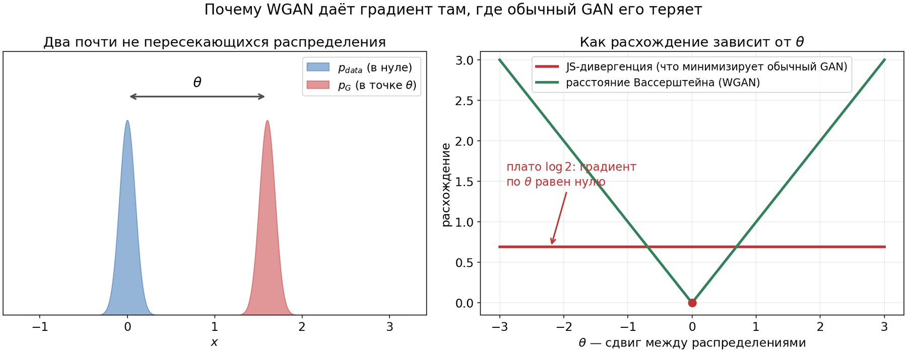
Модельный пример из статьи про WGAN: настоящие данные сосредоточены в нуле (синий), генератор — в точке $\theta$ (красный), перекрытия почти нет. Правая панель показывает, как расхождение зависит от $\theta$. Красная JS-дивергенция при любом ненулевом сдвиге равна $\log 2 \approx 0.69$: это плато, производная по $\theta$ равна нулю, и генератор не получает подсказки, в какую сторону двигаться; лишь ровно в нуле значение скачком падает до нуля (красная точка). Зелёное расстояние Вассерштейна равно $|\theta|$ — у него всюду есть наклон, поэтому по нему можно спускаться даже при полностью непересекающихся распределениях. Conditional GAN (cGAN) добавляет метку $\mathbf{y}$ на вход обеим сетям:
$$G_\theta(\mathbf{z}, \mathbf{y}), \quad D_\phi(\mathbf{x}, \mathbf{y})$$
Дискриминатор теперь отвечает не на вопрос «настоящее ли это?», а на вопрос «настоящая ли это пара (объект, метка)?». Поэтому генератору мало сделать правдоподобный объект — он должен соответствовать заданному условию. Так получают управляемую генерацию: «нарисуй именно цифру 7», «лицо с бородой», «фото по этому эскизу».
Чем генеративные задачи принципиально отличаются от остальных и какое место GAN занимает среди других семейств — в обзоре генеративных задач CV.
- Синтез изображений. StyleGAN и родственники генерируют фотореалистичные лица; синтетические медицинские снимки используют для аугментации данных там, где реальных мало.
- Image-to-Image translation (Pix2Pix, CycleGAN). Перевод между доменами: эскиз $\to$ фото, спутниковый снимок $\to$ карта, лето $\to$ зима. CycleGAN умеет это даже без парных данных.
- Суперразрешение (SRGAN). Восстановление правдоподобных деталей при увеличении изображения в 4 и более раз — там, где обычная MSE-модель дала бы размытие.
- Синтез аудио и видео, генерация табличных данных для приватности.
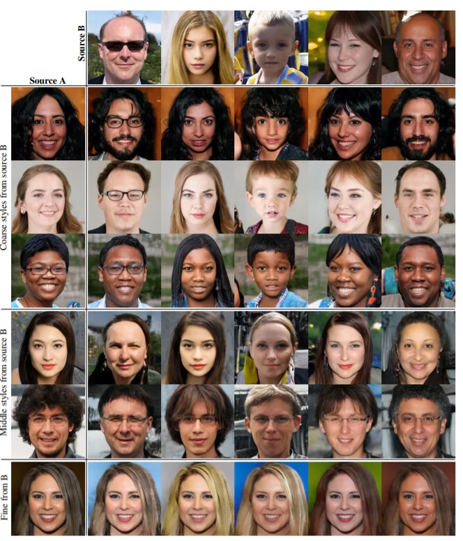
Лица, сгенерированные StyleGAN: ни одного из этих людей не существует. Чёткость деталей — характерное преимущество GAN перед VAE, чей MSE-лосс усредняет варианты и даёт размытие. 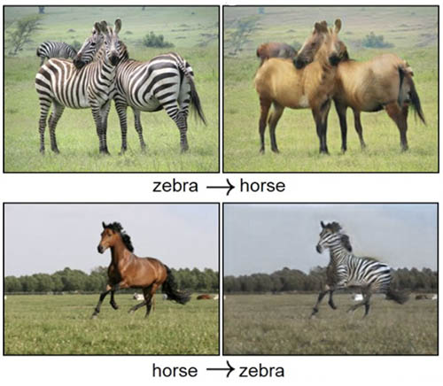
Перевод между доменами условным GAN: вход задаёт условие (эскиз, сегментационная маска), а генератор дорисовывает правдоподобную реализацию. Дискриминатор проверяет именно пару «условие + результат». 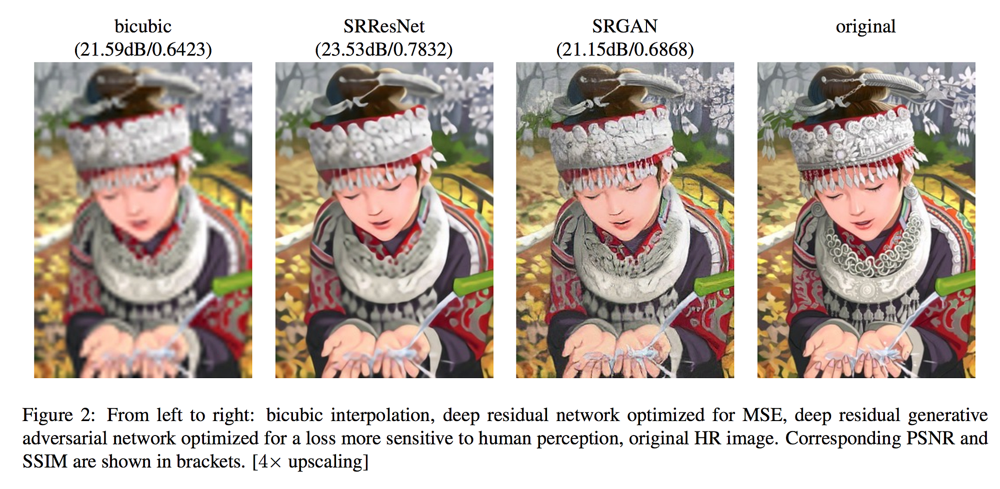
SRGAN восстанавливает текстуры, которых в низком разрешении физически нет. Важная оговорка: детали правдоподобны, но не обязательно достоверны — для медицины и криминалистики это принципиальное ограничение. - Считать значение лосса мерой качества. У GAN лоссы — счёт в игре двух сетей; они могут выглядеть прекрасно при полном схлопывании мод. Качество оценивают FID, Inception Score и глазами.
- «Дискриминатор достиг 99% точности — отлично!» Наоборот: это провал, генератор остался без градиента. Здоровое состояние — примерный паритет.
- Ждать от GAN оценки правдоподобия. GAN не даёт $p(\mathbf{x})$ и по умолчанию не имеет энкодера: по готовой картинке нельзя получить её $\mathbf{z}$ без отдельной процедуры инверсии.
- Верить сгенерированным деталям. Суперразрешение и inpainting дорисовывают правдоподобное, а не истинное — в задачах, где важна достоверность, это источник опасных артефактов.
Как устроен GAN и как он обучается?
Из генератора, превращающего шум $\mathbf{z}$ в объект, и дискриминатора, отличающего настоящие объекты от сгенерированных. Их обучают поочерёдно в состязательной игре с нулевой суммой: дискриминатор учится ловить подделки, генератор — обманывать дискриминатор.
Что является равновесием в этой игре?
Равновесие по Нэшу достигается при $p_G = p_{\text{data}}$, когда оптимальный дискриминатор выдаёт $1/2$ на любом объекте, то есть не может отличить настоящее от подделки. При оптимальном дискриминаторе задача генератора эквивалентна минимизации JS-дивергенции между распределениями.
Что такое mode collapse и почему он возникает?
Схлопывание мод — генератор выдаёт лишь узкое подмножество объектов, игнорируя разнообразие данных. Возникает потому, что функция потерь оценивает объекты поодиночке и никак не наказывает за отсутствие разнообразия: несколько удачных подделок обманывают дискриминатор не хуже, чем всё многообразие.
Почему у генератора исчезает градиент и как это чинят?
При сильном дискриминаторе $D(G(\mathbf{z})) \to 0$, и функция $\log(1 - D(G(\mathbf{z})))$ насыщается — её производная стремится к нулю. Лечение: non-saturating loss, где генератор максимизирует $\log D(G(\mathbf{z}))$ — та же точка оптимума, но большой градиент при плохом генераторе.
Чем WGAN отличается от обычного GAN?
Он использует расстояние Вассерштейна вместо JS-дивергенции, дискриминатор заменён критиком с вещественным выходом, и на критика накладывается ограничение Липшица (клиппинг весов или градиентный штраф в WGAN-GP). Это даёт осмысленный градиент даже при непересекающихся распределениях и лосс, коррелирующий с качеством.
Чем GAN отличается от VAE?
VAE обучается максимизацией ELBO, имеет энкодер и регулярное латентное пространство, стабилен, но даёт размытые сэмплы. GAN обучается состязательно, даёт заметно более чёткие изображения, но нестабилен, склонен к mode collapse, не даёт оценки правдоподобия и по умолчанию не имеет энкодера.
Что такое условный GAN и зачем он нужен?
cGAN подаёт метку или условие на вход и генератору, и дискриминатору. Дискриминатор проверяет соответствие пары «объект — условие», поэтому генератор вынужден порождать объект именно заданного класса. Так получают управляемую генерацию и перевод изображений между доменами.
Как оценивают качество GAN, если по лоссу этого сделать нельзя?
Внешними метриками: FID (расстояние между распределениями признаков реальных и сгенерированных изображений в пространстве Inception), Inception Score, precision/recall для генеративных моделей, а также визуальной инспекцией и проверкой разнообразия сэмплов.